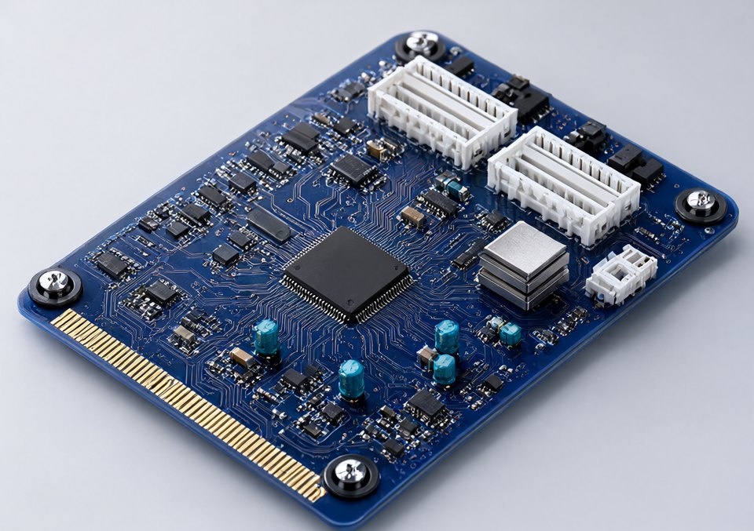
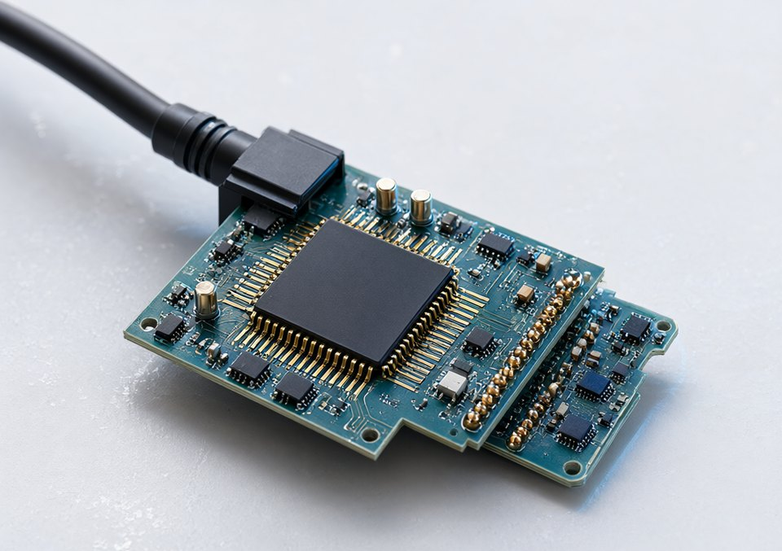
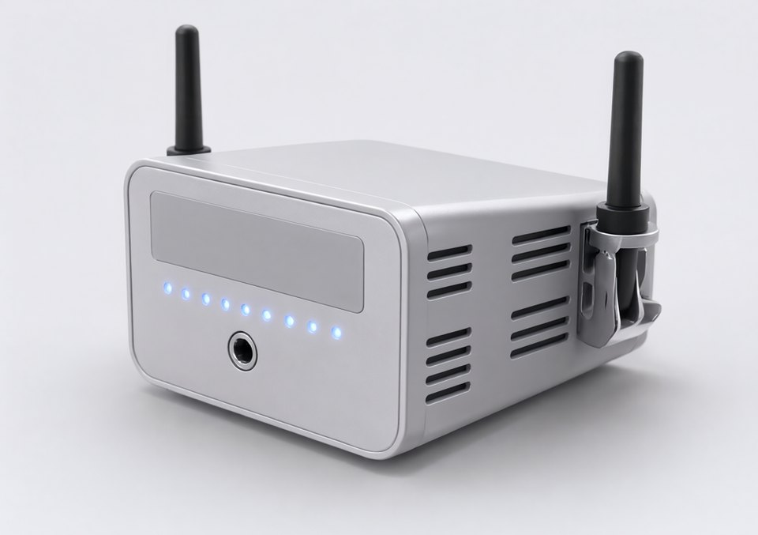
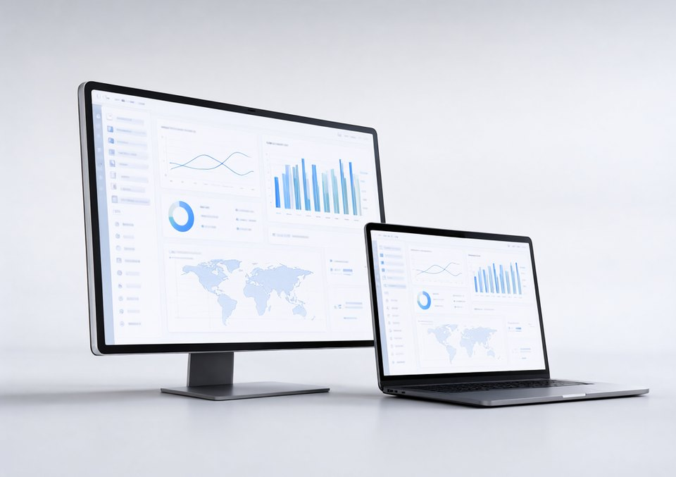

软件开发
管理系统、数据看板、对外接口与小程序定制开发，从需求梳理到部署上线一段接完。
友南开发技术（深圳）有限公司
从设备接入、平台开发到信息系统集成，链路上的某一段或者整条都能接。深圳立足珠三角，货物进出口、技术进出口都可开展。
说清三件事就够开始：用在什么场景、要接什么设备或系统、大概什么预算。
Services
标题就是营业执照上的登记项原文，下面一句是我们实际怎么干。第十项「技术服务、技术开发、技术咨询、技术交流、技术转让、技术推广」在执照上登记为一项，写在最后一格。
管理系统、数据看板、对外接口与小程序定制开发，从需求梳理到部署上线一段接完。
设备接入、协议适配、边缘采集与远程运维，把现场设备连成一套查得到的数据。
网络、机房、监控门禁、广播音响等子系统，与既有业务系统对接到同一个平台上。
5G 专网与通信模块选型、现场信号勘察、上行链路配置，配合产线和园区的无线覆盖。
算力与数据资源环境搭建、模型部署与推理接口，做的是基础设施这一层。
产线数据采集、清洗、指标口径与报表，把设备数据接进日常经营管理里用。
设计与验证环节的技术支持、评估板与方案配套，配合整机选型一起推进。
组网、割接、链路排障与网络改造实施，现场问题现场定位。
选型评估、方案论证，以及投标与验收环节需要的技术文件支持。
执照上登记为一项，实际按你要哪一种单独签：驻场技术支持、联合开发、成果与技术转让、培训与交流都可以拆开谈。
问一种给法 ›Architecture
只做其中一段也行。方案与配置清单里会写清哪一段归我们、哪一段要甲方或第三方配合，不写含糊的"整体负责"。
01
02
03
04
05
这张图说的是工作方式，不是某个已交付项目的方案图；具体点位和拓扑按现场勘察结果出。
Custom Hardware
定制按四个层级承接：单板设计、核心模组、边缘整机、数据平台。每一级都可以单独委托，也可以串成一条从现场采集到业务看板的完整链路，接口与数据口径在方案阶段一次定下来。




以上为产品形态示意，具体器件、层数、结构与接口以项目原理图和结构图为准；板卡与模组类项目在图纸确认后进入打样。对应营业执照登记项目：集成电路芯片设计及服务、物联网技术研发、信息系统集成服务、工业互联网数据服务。
Supply
下面是营业执照登记的销售品类，不是现货清单。型号、数量与价格按询价确认，跟着项目一起走货，省掉你自己分头采购的对接成本。
计算机软硬件及辅助设备
登记为零售。服务器、工作站、工控机、终端与外设。
电子产品
整机与部件、通信模块、消费电子类配套。
电子元器件与机电组件设备
阻容感与连接器、电机与驱动等机电组件。
电子专用设备
生产与检测环节的专用设备及其配套工装。
安防设备
监控、门禁、报警与配套存储，含与业务系统对接。
广播影视设备
会议扩声、演播与显示配套。
音响设备
扩声与会议音频，园区与厂房分区广播。
充电桩
园区与场站充电配套，可与平台侧数据接入同批做。
家用电器
工程随货与宿舍、办公配套。
口径：以上四项按营业执照登记的经营范围逐条数出，分号算一项。
「技术服务、技术开发、技术咨询、技术交流、技术转让、技术推广」在执照上登记为一项，这里也按一项计入 10 项。
合计 23 项 = 一般项目 21 项 + 许可项目 2 项（建设工程施工、电气安装服务），许可项目没有算进上面三格。
How it works
用在哪、要接什么设备或系统、大概什么预算 —— 这三句清楚，我们先给方案和分段配置清单，你再决定做到哪一段。
涉及建设工程施工、电气安装服务的部分属许可项目，依法须经批准后方可开展，具体以相关部门批准文件或许可证件为准。
举例子最快：给车间做能耗看板、把园区门禁接进办公系统、仓库加监控与网络。
按链路分段报价，写清软件、设备、施工各段的分工与配合条件。
软件开发、设备到货与安装、现场布线与网络配置并行推进。
点位表、告警阈值、权限与数据口径逐项过，交付文档与使用培训。
值守、巡检、扩容与备件供应，按年或按次都可以谈。
Business Scope
逐条照营业执照列，方便你核对能不能开票、以什么名义签合同。许可项目没批下来之前不对外承接。
除依法须经批准的项目外，凭营业执照依法自主开展经营活动
依法须经批准的项目，经相关部门批准后方可开展经营活动，具体经营项目以相关部门批准文件或许可证件为准
这两项在页面上只作登记说明：批准文号与证书信息待补，补齐后再写"已具备"。
Contact
先把场景、要接的设备或系统、大概预算发过来，我们按链路分段给配置清单和报价。
业务电话
待补 定稿后同时改成 tel: 链接
邮箱
待补
注册地址
深圳 · 详细地址待补
工作时间
待补